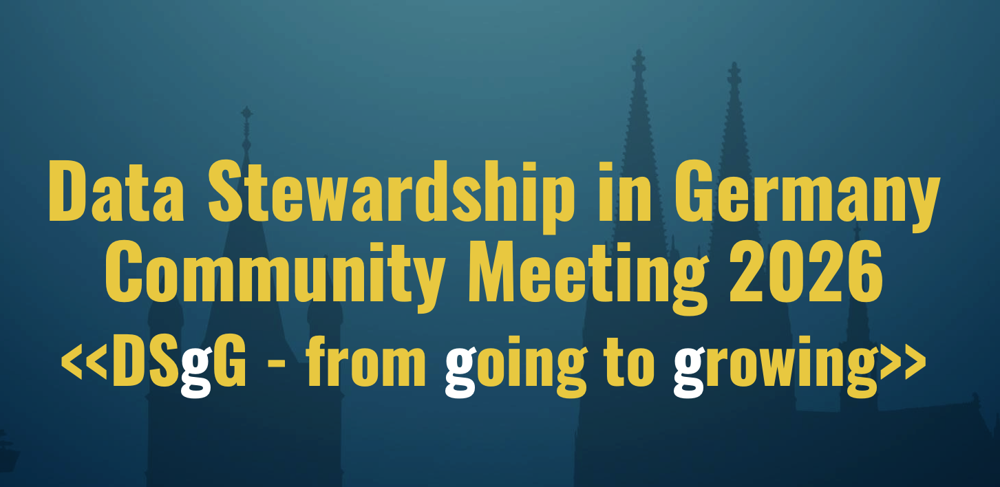
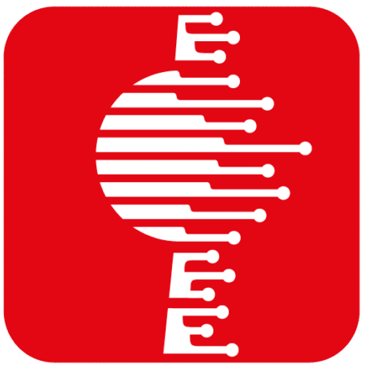

I hold a Ph.D. in Linguistics from Goethe University Frankfurt and previously worked as a Research Associate at the University of Stuttgart. In 2023, I transitioned into a new role in research data management (RDM) at the Karlsruhe Institute of Technology (KIT). See my CV for further details.
My research interests lie in the area of phonetics and phonology, in particular speech prosody: How do speakers encode meaning by means of suprasegmental phonetic features, such as pitch and duration, and how do listeners interpret these features as linguistic forms? I have conducted research on the prosodic patterns in languages as diverse as German, Hungarian, Tswana, and Javanese. The main focus is on prosodic phrasing, syntax-prosody interface relations, and the prosodic encoding of information structure. Check out my publications for details.
I teach courses related to my research interests. Each winter term, I teach a phonetics course at the School for Speech Therapy of the Tübingen University Hospital. From 2013 to 2022, I taught seminars in General and English Linguistics at the University of Stuttgart. Furthermore, I deliver workshops and training on research data management and Open Science as part of the RDM@KIT team.
News and Updates
-
Poster presentation at the Data Stewardship in Germany Community Meeting 2026, University of Cologne, 28–29 September 2026

I will present a poster at DSgG 2026 on Professionalizing Data Stewardship: Insights from the CAS FDM Certificate Program.
-
Two talks at BiblioCon 2026 , Estrel Congress Center Berlin, 19–22 May 2026

I presemted DSgG and CAS FDM.